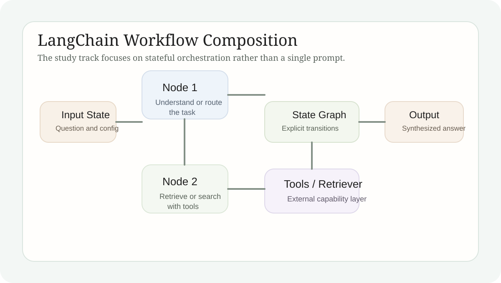

LangChain 学习笔记
本文把 LangChain 与 LangGraph 的组件化思路重新组织成“工作流编排”视角，重点说明状态、节点、工具与检索如何被写成一个可调试的应用流程。
Technical Explainer
LangChain 学习的重点不是“把模型调通”本身，而是把 prompt、状态、工具、检索和外部搜索组织成可拆、可读、可扩展的工作流。对象一旦从“单轮问答”变成“多步应用”，这种组织层就会变得非常关键。
1. 学习主题
LangChain 这一阶段的学习主题，是 LLM 应用如何从“一个大 prompt”转向“一个分阶段系统”。只要任务涉及查询理解、外部搜索、检索、整合回答或工具调用，单轮 prompt 往往不再足够清晰。LangChain 和 LangGraph 的价值，就在于把这些步骤变成可见组件。
因此，本文关注的对象不是某一个库函数，而是工作流本身。节点怎样切分，状态怎样在节点间流动，工具怎样接入，检索怎样与生成配合，这些问题构成了整个应用层逻辑。

2. 核心原理
LangChain 的核心原理不是“封装更多调用”，而是“给应用逻辑分层”。prompt、模型、retriever、tools、memory 或 graph node 都被写成明确组件之后，多步任务就不必继续塞进一个黑箱 prompt 中。系统的每一段责任范围因此变得更清楚。
LangGraph 进一步把这种分层推进到状态图层面。节点负责局部动作，状态负责节点间信息传递，边负责流程推进方向。只要任务需要分步骤理解、检索和生成，这种写法通常比单体脚本更容易维护。
组件化
模型、提示词、检索器和工具被拆成明确对象后，应用逻辑才真正可读。
状态流
节点之间共享的不是模糊上下文，而是被显式维护和传递的状态。
工作流边界
理解、检索、搜索和回答一旦分层，系统调试会比单脚本 prompt 容易得多。
3. 练习实现
`langgraphdemo.py` 用来练习一个最小图式工作流：先理解用户问题，再执行真实搜索，最后生成回答。`Semantic_Search_langchain/langsmith_test.py` 则用来观察一个最小 LangChain agent 如何绑定模型和工具。与此同时，模型配置和 API 信息被迁移到环境变量中，以减少脚本对固定环境的依赖。
这两段代码共同说明了一个事实：LangChain 的价值不在于替你“自动完成一切”，而在于它提供了一套更适合把应用逻辑显式写出来的结构。工作流图、工具接口和状态对象一旦被写清楚，后续扩展就会比纯 prompt 脚本自然得多。
图式工作流
`langgraphdemo.py` 把理解、搜索和回答明确拆成三个节点。
工具绑定
`langsmith_test.py` 展示最小 agent 如何把模型与工具接口接起来。
可迁移配置
环境变量化的配置方式让脚本更接近真实工程，而不是一次性 notebook 实验。
4. 当前产出
这组学习已经给出一个明确结果：当任务涉及多步处理时，LangChain/LangGraph 提供的组件化与状态化组织方式会比单体脚本更有工程价值。流程一旦显式，问题定位、调试和扩展都会更清晰。
更重要的是，这种学习把“模型能力”与“应用结构”区分开了。模型负责生成和理解，工作流负责把这些能力放进正确步骤里。二者缺一不可，但它们不再被混成一个大 prompt。
5. 结论
LangChain 的真正价值，不在于语法糖，而在于工作流编排能力。只要应用不是单轮问答，显式节点、显式状态和显式工具连接就能让系统更像工程对象，而不是一次性演示脚本。
6. 完整代码笔记
阅读这组源码时建议先看三个层面
先看状态对象
如果状态边界不清楚，图式工作流只是形式上的拆分。
再看节点职责
理解、搜索和回答必须各自承担清晰任务，流程才不会重新塌回一个大 prompt。
最后看工具接口
工具与 retriever 的接入方式决定整个工作流是否真的能够调用外部能力。
代码范围：完整渲染 `langgraphdemo.py` 与 `Semantic_Search_langchain/langsmith_test.py`，集中展示工作流节点和最小工具绑定。